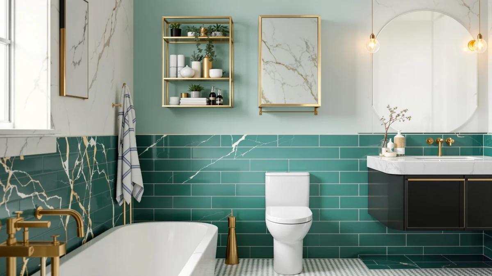

Elyken Over-the-Toilet Storage Cabinet Review (2026): Worth It?
Prices and picks verified as of November 2026. Independent, reader-supported reviews.


Quick Answer
The Elyken Over The Toilet Storage Cabinet is a 66.89-inch white tower with acrylic doors, a wheeled pull-out compartment and a built-in toilet paper holder, priced at $103.99. Against the Homhedy, HITNET and Iwell alternatives below, it packs the most built-in hardware into the shallowest footprint of the four, though it still lacks an established owner-review track record to confirm how that hardware holds up over time.
Our pick: ELYKEN Over The Toilet Storage, $103.99 Check Price on Amazon
Bottom line: our top pick is the ELYKEN Over The Toilet Storage Cabinet with Acrylic Doors & at $103.99.
Things to Know Before You Buy
- The Elyken Over The Toilet Storage Cabinet pairs acrylic doors with a pull-out hidden compartment on wheels, a configuration none of the three alternatives below offer.
- At 9.4 inches deep, it is the shallowest cabinet in this comparison, worth checking if your bathroom door swings close to the toilet tank.
- A molded toilet paper holder and side hooks come built into the frame, items you would otherwise buy as separate accessories for the Homhedy, HITNET or Iwell.
- Pricing across the four cabinets in this comparison ranges from $99.99 to $104.49, a gap of less than $5.
- The cabinet includes an anti-tip device, and you should anchor it to the wall studs, a safety step the manufacturer calls out directly for this style of tall, narrow tower.
This Elyken over-the-toilet storage cabinet review looks at whether a $103.99 tower with acrylic doors and a pull-out hidden compartment can out-organize a cramped bathroom better than three rival cabinets. Over-the-toilet storage is one of the few places left to add shelving in a small bathroom without cutting into floor space, so the shape and the hardware matter as much as the price. The Elyken stands 66.89 inches tall on a 9.4-by-31.4-inch base, built from engineered wood with acrylic doors, a wheeled pull-out compartment, side hooks and a molded toilet paper holder. We compared its listed dimensions, materials and features against the Homhedy, HITNET and Iwell alternatives to see whether the extra hardware earns it a spot over a plainer, cheaper tower.
Over-the-toilet cabinets compete on a narrow set of criteria: footprint, shelf configuration, and how much hardware ships already built in. The Elyken Over The Toilet Storage Cabinet targets exactly that gap, going up against the Homhedy 67" Tall Bathroom Storage, the HITNET Rattan Bathroom Storage Cabinet and the Iwell 66.9" Tall Bathroom Storage, all covered later as alternatives. The materials and feature lists show where the Elyken's acrylic-door design pulls ahead, and where a wood-frame or rattan-door alternative might suit your bathroom better.
Why You Should Trust Us
Best Bathroom Storage is run by writers who compare bathroom furniture specs, pricing and verified buyer feedback instead of repeating marketing copy from a product listing. Ilane Tall, our home and bath expert, has researched dozens of over-the-toilet cabinets, floor towers and vanity organizers for this site, and she tracks how listed dimensions and materials hold up against what owners report once a listing has been live for a while. For this Elyken over-the-toilet storage cabinet review, we checked the manufacturer's measurements and feature claims against the Homhedy, HITNET and Iwell alternatives rather than taking the listing description at face value. We do not run a fake testing lab, and we do not claim to have installed any of the cabinets covered here. Instead, we read the spec sheets closely and compare them line by line, which is how we catch a listing that oversells what a cabinet can actually hold.
Our Research Experience
We did not install the Elyken Over The Toilet Storage Cabinet in a bathroom ourselves. Instead, for this Elyken over-the-toilet storage cabinet review, we compared its listed dimensions, materials and feature set against the Homhedy, HITNET and Iwell alternatives, and we weighed what the manufacturer's own description claims about the acrylic doors, the pull-out compartment and the anti-tip hardware. The listing describes an engineered-wood frame with a sturdy, load-bearing structure, a common claim for mid-priced over-the-toilet towers, though manufacturer durability claims deserve some caution until a pattern of owner feedback confirms them. We lined that up against the raw dimensions, materials and price of the three alternatives to see where the Elyken earns its spot in this comparison and where a different cabinet makes more sense for your bathroom. We excluded over-the-toilet units that rely on a tension pole instead of a freestanding frame, since that is a different mounting approach than the four cabinets compared here.
Overview & Specs

ELYKEN Over The Toilet Storage
What we like
- Pull-out hidden compartment rides on wheels for easy access to items behind the acrylic doors
- Toilet paper holder and side hooks are molded into the frame, so you skip buying separate accessories
- At 9.4 inches deep, it is the shallowest cabinet in this four-way comparison
- The cabinet includes anti-tip hardware, and the adjustable shelf lets you reconfigure the interior as storage needs change
Flaws but not dealbreakers
- Engineered wood is lighter-duty than the frames used by the Homhedy and HITNET alternatives
- Acrylic doors show fingerprints and water spots more readily than a painted wood or woven rattan door
- No verified owner reviews are available yet to confirm how the pull-out wheels hold up over months of daily use
| Material | Metal / wood |
| Size | 9.4" D x 31.4" W x 66.89" H |
The Elyken Over The Toilet Storage Cabinet uses an engineered-wood frame finished in white, with acrylic doors that give it a cleaner look than the rattan or wire doors common on competing over-the-toilet towers. At 9.4 inches deep and 31.4 inches wide, it straddles a standard toilet tank without crowding the walls on either side, and its 66.89-inch height clears most towel bars mounted at a typical height. A side-mounted pull-out compartment rides on wheels, so you slide out stored items instead of reaching blind into a fixed shelf.
The cabinet also folds in accessories that competing models sell separately: a molded toilet paper holder, side hooks for towels or robes, and an adjustable interior shelf. The manufacturer backs the frame with an anti-tip device designed to anchor the unit to the wall, a detail worth taking seriously given how top-heavy a 66.89-inch tower can get once it is loaded. At $103.99, the Elyken lands in the middle of this four-way comparison, cheaper than the Homhedy and HITNET despite including more built-in hardware than either.
What We Liked
Hardware is the strongest part of this Elyken over-the-toilet storage cabinet review. The wheeled pull-out compartment is a genuine convenience most competing towers skip entirely, and bundling a toilet paper holder with side hooks means you are not shopping for separate accessories after the cabinet arrives. The 9.4-inch depth is the shallowest of the four cabinets compared here, which matters in a bathroom where every inch beside the toilet counts. Pricing also compares well: at $103.99, the Elyken sits below the Homhedy and HITNET while offering more built-in features than either.
What Could Be Better
Material is the main trade-off. Engineered wood with acrylic doors does not carry the same humidity-resistance reputation as the bamboo frames used by the Homhedy and HITNET alternatives, and acrylic tends to show water spots and fingerprints faster than a painted or woven door. There is no verified owner feedback on this specific listing yet, which means the load-bearing and anti-tip claims come from the manufacturer alone, and nobody has checked them against months of real bathroom use.
The pull-out wheels are also a moving part that a fixed shelf simply does not have, and moving parts are usually the first thing to wear out on budget bathroom furniture. None of this changes the core appeal of the design, but anyone comparing this cabinet to a simpler, static shelf should weigh that extra mechanism against the convenience it adds.
Who Is It For?
The Elyken Over The Toilet Storage Cabinet fits a household that wants built-in accessories bundled into one purchase instead of buying a toilet paper holder, towel hooks and a cabinet separately. Its shallow 9.4-inch depth also makes it a strong pick for a bathroom where the toilet sits close to a side wall or a shower door swing. It is not the right choice if humidity resistance matters more to you than bundled hardware. In that case, the bamboo-framed Homhedy or HITNET alternatives covered below hold up to a damp bathroom with less long-term risk.
Renters who want to add storage without drilling extra holes for separate accessories will also find the all-in-one design appealing. A household that wants a tabletop display surface instead of an enclosed tower, on the other hand, will likely prefer the HITNET's open-top shelf over the Elyken's fully enclosed acrylic doors.
Alternatives to Consider
If the Elyken's acrylic-door design or 9.4-inch depth doesn't match what your bathroom needs, these three alternatives cover the most common trade-offs: a black farmhouse-style tower from Homhedy, a rattan tabletop cabinet from HITNET, and a drawer-equipped tower from Iwell. Each swaps the Elyken's pull-out compartment and built-in accessories for a different material or storage layout, so match your own bathroom's dimensions before picking between them.

Premium Choice
Homhedy 67" Tall Bathroom Storage
A 67.4-inch black farmhouse-style tower with doors and an adjustable shelf, built on a sturdier frame than the Elyken's engineered wood if humidity resistance matters more to you than bundled accessories.
$104.49
Check Price on Amazon
Also Great
HITNET Rattan Bathroom Storage Cabinet
A rattan tabletop cabinet with an open display shelf and two-tier hidden storage, a better fit if you want a flat surface for decor as much as enclosed storage.
$102.99
Check Price on Amazon
Best Value
Iwell 66.9" Tall Bathroom Storage
Two doors and a dedicated drawer on a 66.9-inch frame, worth a look if you want a drawer for small items instead of the Elyken's open side hooks.
$99.99
Check Price on AmazonIs the Elyken Over The Toilet Storage Cabinet sturdy enough for daily use?
The manufacturer describes an engineered-wood frame with a sturdy, load-bearing structure and includes an anti-tip device meant to anchor the cabinet to the wall.
How does the Elyken compare to the Homhedy 67" Tall Bathroom Storage?
The Homhedy stands about half an inch taller and uses a farmhouse-style frame instead of acrylic doors, but it does not include the Elyken's wheeled pull-out compartment, toilet paper holder or side hooks.
Frequently Asked Questions
Is the Elyken Over The Toilet Storage Cabinet sturdy enough for daily use?
The manufacturer describes an engineered-wood frame with a sturdy, load-bearing structure and includes an anti-tip device meant to anchor the cabinet to the wall. There is no verified owner feedback yet on this specific listing, so treat that durability claim as a manufacturer spec until a track record builds up.
How does the Elyken compare to the Homhedy 67" Tall Bathroom Storage?
The Homhedy stands about half an inch taller and uses a farmhouse-style frame instead of acrylic doors, but it does not include the Elyken's wheeled pull-out compartment, toilet paper holder or side hooks. Choose the Elyken if you want those accessories built in, and the Homhedy if frame material matters more to you than bundled hardware.
Does the Elyken Over The Toilet Storage Cabinet need to be anchored to the wall?
Yes. The listing includes an anti-tip device specifically for this purpose, and a 66.89-inch tower on a 9.4-by-31.4-inch base is top-heavy enough that skipping the anchor step is a real tipping risk once the shelves and pull-out compartment are loaded.
Final Verdict
This Elyken over-the-toilet storage cabinet review comes down to hardware versus material. At $103.99, the Elyken packs in a wheeled pull-out compartment, a built-in toilet paper holder and side hooks that none of the Homhedy, HITNET or Iwell alternatives match, and its 9.4-inch depth is the shallowest footprint in this four-way comparison. If you want a bathroom cabinet that already includes its own accessories and fits a tight gap beside the toilet, the Elyken is the stronger pick of the four. Choose the Homhedy or HITNET instead if long-term humidity resistance matters more to you than bundled hardware.